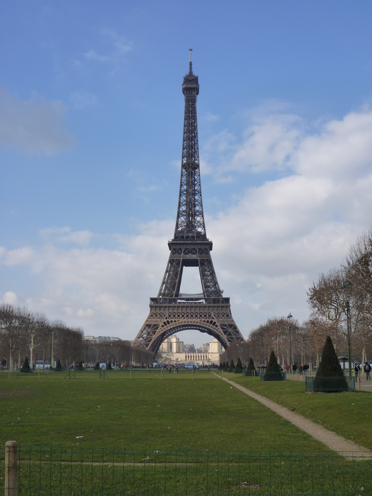

El azul añil del agua, el verde de la vegetación, la brisa constante y el sonido acuático inagotable contribuyen a hacer de este lugar, situado a 133 km de San Cristóbal de las Casas, uno de los más espectaculares e inolvidables de México.
El río Agua Azul desciende su lecho calizo en escalones formando una serie de impresionantes cascadas que crean albercas naturales contenidas por diques calcáreos, los llamados “gours” en la terminología geológica. La carretera conduce al sitio donde se ubican los modestos servicios con que cuenta.
Los intrépidos pueden alcanzar, con la ayuda de guías locales, otras cascadas todavía más espectaculares, pues la escalera continúa aguas abajo hasta que el río se precipita al Tulijá, formando una de las más bellas cortinas de agua. Su color se debe al lecho calizo, sólo perceptible en épocas de seca; en la de lluvia la espectacularidad no disminuye pues es cuando aumenta el volumen hídrico.
Cuatro Ciénegas, Coahuila, está ubicado dentro de los márgenes del desierto chihuahuense, donde se han documentado los esfuerzos de un grupo de investigadores encabezados por la bióloga de la UNAM, Valeria Souza y su esposo, el científico Luis Eguiarte, a quienes el destino los trajo aquí desde hace 15 años. Desde entonces, han dedicado su vida a la investigación de este ecosistema paradigmático. Ellos llegaron a Cuatro Ciénegas invitados por un proyecto de la NASA dirigido al estudio de bacterias.
En las pozas de este desierto, descubrieron criaturas púrpuras ancestrales que datan del periodo arqueano, que data de hace unos tres mil 800 millones de años, antes de que surgiera la fotosíntesis verde que libera el oxígeno. Ambos investigadores se dieron cuenta que en ese lugar habitaban las criaturas que cambiaron el mundo para siempre. Bajo ese descubrimiento, Valeria Souza se enamoró, pero pronto descubrió que los ranchos alfareros y su extracción indiscriminada de agua lo habían devastado. Es por ello que la bióloga, desde entonces, se ha dedicado a desentrañar los misterios científicos de Cuatro Ciénegas y también a generar conciencia para su protección.
Los habitantes adultos de Cuatro Ciénegas han creído toda su vida que el agua es un recurso inagotable, que en principio están las necesidades humanas y después la preservación del ecosistema. Y ante esto, argumentan ataques directos contra su forma de subsistencia, basada en cultivos que requieren de mucha agua en medio de una zona desértica.
Mi nombre es Angel David Velasco. Vivo en la ciudad de Tuxtla Gutierrez, Chiapas. Soy ingeniero en electrónica, tranajo en mi empresa MV electrónica. Estoy empezando a programar en web para darle mejor vista a mi pagina.